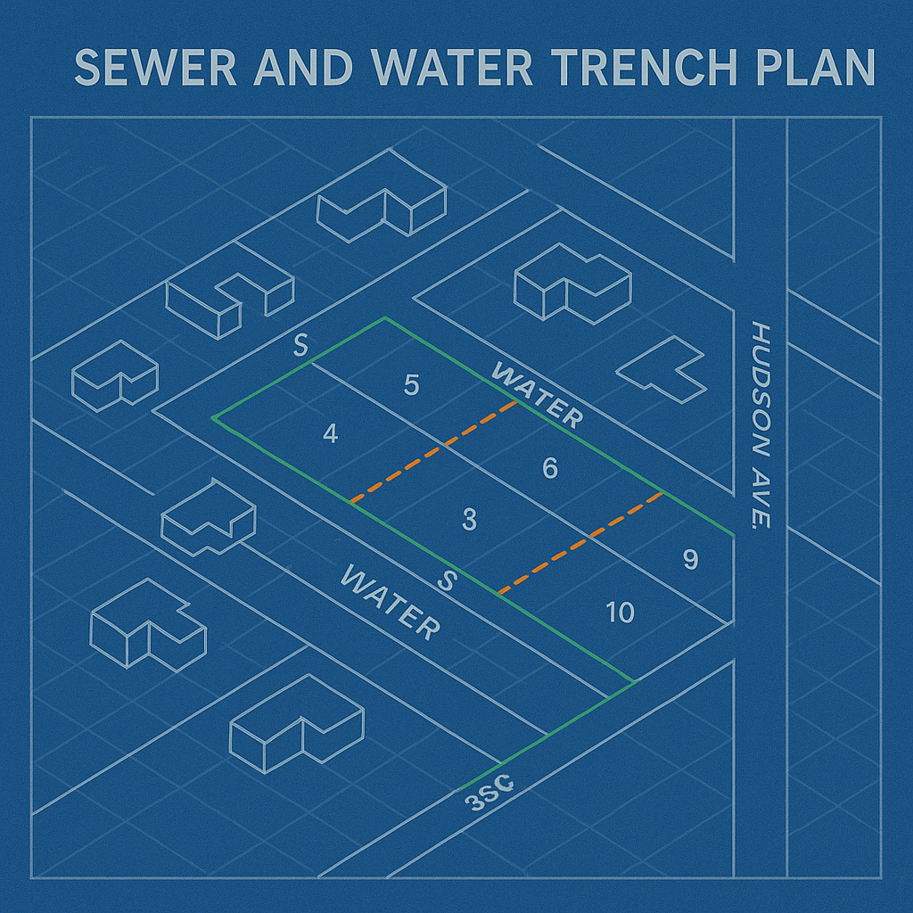

Frequently Asked Questions
Got questions? We're here to help. Here are answers to some of our most common customer inquiries.

- Q: What areas do you service?
A: We serve the entire local region with quick response times.
- Q: Do you offer emergency repairs?
A: Yes! 24/7 emergency underground plumbing service available.
- Q: Are estimates free?
A: Always. We believe in honest, upfront pricing.